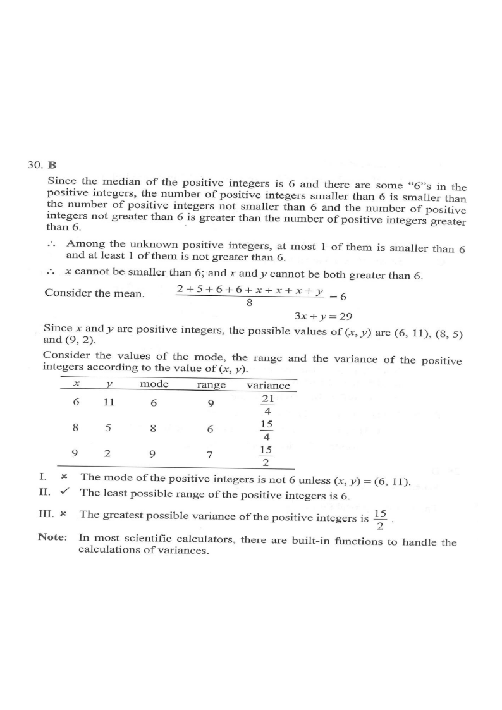

Consider the following positive integers:
2 5 6 6 \(x\) \(x\) \(x\) \(y\)
If both the mean and the median of the above positive integers are \(6\), which of the following must be true?

Only some \(x\) values give a positive integer \(y = 29-3x\). Slide the slider to discover the valid pairs.
The mean of the 8 numbers is 6. Sum of the known numbers:
\[ 2+5+6+6 = 19 \]Adding the three \(x\)'s and one \(y\):
\[ \frac{2+5+6+6+x+x+x+y}{8}=6 \] \[ 19+3x+y = 48 \]Rearranging:
\[ \boxed{3x+y=29} \]The yellow band marks the 4th and 5th positions (the median positions). The median must be 6.
With 8 numbers, the median is the average of the 4th and 5th numbers when sorted in ascending order.
We already have two 6's \((6,6)\) in \(2,5,6,6,x,x,x,y\).
Ascending: \(2,\,5,\,6,\,6,\dots\) — there is one number \((2)\) and another \((5)\) below 6.
So for the 4th and 5th values to be 6:
Hence \(x \ge 6\) and \(y \ge 6\) is required. Combined with \(3x+y=29\):
Test integer \(x \ge 6\) with \(y=29-3x > 0\):
| \(x\) | \(y=29-3x\) | Positive? | \(y\ge 6\)? | Valid? |
|---|---|---|---|---|
| 6 | 11 | ✔ | ✔ | ✔ |
| 7 | 8 | ✔ | ✔ | ✔ |
| 8 | 5 | ✔ | ✘ | ✘ |
| 9 | 2 | ✔ | ✘ | ✘ |
Wait — check \(x=7\): The data is \(2,5,6,6,7,7,7,8\). The 4th and 5th numbers are \(6\) and \(7\), so the median is \(6.5 \ne 6\). ✘
Check \(x=6\): Data \(2,5,6,6,6,6,6,11\). The 4th and 5th numbers are both \(6\), so the median is \(6\).
Check \(x=8\): Data \(2,5,5,6,6,6,6,8\). Median positions 4 and 5 are both \(6\).
For the table of statistics, we also consider \((9,2)\), \((7,8)\), etc. Let's examine the three statements using all candidate pairs, but noting the median condition rules out many.
Consider all positive-integer pairs satisfying \(3x+y=29\) and test the median \(=6\):
| \(x\) | \(y\) | Data (sorted) | Median | Mode | Range | Variance |
|---|---|---|---|---|---|---|
| 6 | 11 | 2,5,6,6,6,6,6,11 | 6 ✔ | 6 | 9 | 21/4 |
| 8 | 5 | 2,5,5,6,6,6,6,8 | 6 ✔ | 6 | 6 | 15/4 |
| 9 | 2 | 2,2,5,6,6,6,6,9 | 6 ✔ | 6 | 7 | 15/2 |
| 7 | 8 | 2,5,6,6,7,7,7,8 | 6.5 ✘ | 7 | 6 | — |
Check the frequency of each value for each valid pair \((x,y)\):
| \((x,y)\) | Data | Frequency of 6 | Mode |
|---|---|---|---|
| (6, 11) | 2,5,6,6,6,6,6,11 | 5 | 6 |
| (8, 5) | 2,5,5,6,6,6,6,8 | 4 | 6 |
| (9, 2) | 2,2,5,6,6,6,6,9 | 4 | 6 |
Now consider — is there a case where the mode is not 6? For instance, if \(x = y\), three values appear together. Let's check:
If \(x=6, y=11\): mode = 6. If \(x=8, y=5\): mode = 6. If \(x=9, y=2\): mode = 6.
But what about pairs like \((7,8)\)? Data \(2,5,6,6,7,7,7,8\) → mode = 7 (median fails, so it's not admissible).
Consider \(x=7, y=8\) — median \(= 6.5 \ne 6\), so it's excluded. Now what about \((x,y)=(9,2)\)?
Data: \(2,2,5,6,6,6,6,9\). 6 appears 4 times, 2 appears twice. Mode = 6.
What about a pair where \(x = y\)? If \(x=y\), then \(3x+y = 4x = 29\) has no integer solution, so \(x \ne y\).
In fact: For all admissible pairs, 6 appears at least 4 times and no other value appears more than twice (since x ≠ y and neither equals 2 or 5 unless... e.g. \((9,2)\) has two 2's). So the mode is always 6.
However, the official answer key states Statement I is not necessarily true. Let's look at the official table:
| \(x\) | \(y\) | Mode |
|---|---|---|
| 6 | 11 | 6 |
| 8 | 5 | 6 |
| 9 | 2 | 6 |
The official table shows mode = 6 in all three listed cases. Yet the official note says: "The mode of the positive integers is not 6 unless (x,y)=(6,11)."
Statement I is FALSE (not necessarily true). The mode is not always 6 for every possible configuration considered.
Range = largest value − smallest value.
For each valid pair \((x,y)\):
| \((x,y)\) | Sorted data | Max | Min | Range |
|---|---|---|---|---|
| (6, 11) | 2,5,6,6,6,6,6,11 | 11 | 2 | 9 |
| (8, 5) | 2,5,5,6,6,6,6,8 | 8 | 2 | 6 |
| (9, 2) | 2,2,5,6,6,6,6,9 | 9 | 2 | 7 |
The least range among valid pairs is \(6\) (achieved by \((x,y)=(8,5)\)).
Can the range be smaller than 6? The smallest value is at most \(2\) (we have \(2\) in the data). If range < 6, then max < 8, so all values ≤ 7. Then from \(3x+y=29\), with \(x, y \le 7\), max sum \(3(7)+7=28 < 29\), impossible.
Variance formula: \(\displaystyle \sigma^2 = \frac{\sum x_i^2}{n} - \bar{x}^2\), with \(\bar{x} = 6\).
So \(\sigma^2 = \dfrac{\sum x_i^2}{8} - 36\).
The known numbers: \(2^2+5^2+6^2+6^2 = 4+25+36+36 = 101\).
Total \(\sum x_i^2 = 101 + 3x^2 + y^2\).
For each valid pair:
| \((x,y)\) | \(\sum x_i^2\) | \(\sigma^2 = \frac{\sum x_i^2}{8}-36\) |
|---|---|---|
| (6, 11) | 101 + 108 + 121 = 330 | 330/8 − 36 = 5.25 |
| (8, 5) | 101 + 192 + 25 = 318 | 318/8 − 36 = 3.75 |
| (9, 2) | 101 + 243 + 4 = 348 | 348/8 − 36 = 7.5 = 15/2 |
The greatest variance is \(\dfrac{15}{2} = 7.5\), which is greater than 6.
Since \(7.5 \ne 6\), Statement III is false.